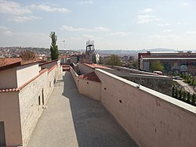
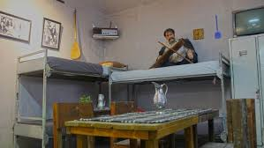
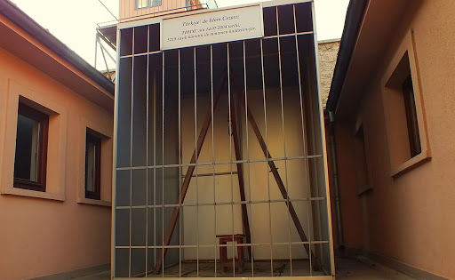

Ulucanlar Cezaevi
Ankara Merkez Kapalı Ceza ve Tutukevi veya Ulucanlar Cezaevi, 1925 ve 2006 yılları arasında Ankara'nın Altındağ ilçesinin Ulucanlar
semtinde faaliyet göstermiş olan bir cezaevidir. Türk siyasi ve edebi hayatında da önemli bir yere sahip olan Ulucanlar Cezaevi'nin restore
edilerek müze ve kültür sanat merkezine dönüştürülmesi projesi Altındağ Belediyesi'ne verildi. 2009 yılında başlatılan restorasyon çalışmaları
2010 yılında tamamlandı
Cezaevi
1923 yılında askerî depo olarak hizmet vermek üzere inşa edilen bir bina içine kurulan cezaevi, 1925 yılında yapılan tadilatlar ile
cezaevi olarak kullanılmaya başlandı.
68 kuşağının önde gelen isimlerinden Deniz Gezmiş, Yusuf Aslan ve Hüseyin İnan, 6 Mayıs 1972
tarihinde cezaevi avlusundaki kavak ağacının altında idam edildi. 1980 İhtilalinin ilk infazları da 8 Ekim gecesinde, sol görüşlü Necdet
Adalı ile sağ görüşlü Mustafa Pehlivanoğlu'nun idam edilmesiyle bu cezaevinde gerçekleşti. 13 Aralık 1980'de ise Erdal Eren'e verilen
idam cezası burada infaz edildi.
Cezaevinde, Cüneyt Arcayürek, Mahmut Alınak, Fakir Baykurt, Hatip Dicle, Orhan Doğan, Bülent Ecevit,
Yılmaz Güney, Nâzım Hikmet, Yaşar Kemal, Yavuz Öbekci, Selim Sadak, Sırrı Sakık, Kemal Tahir, Metin Toker, Muhsin Yazıcıoğlu ve Leyla
Zana gibi çok sayıda ünlü tutuklu ve mahkûm kaldı.
29 Eylül 1999'da başlatılan Hayata Dönüş Operasyonu sırasında cezaevinde 10 kişi
öldü, 100'e yakın kişi de yaralandı.
Ulucanlar Cezaevi 1 Temmuz 2006'da kapatıldı. Daha sonra restore edilerek müzeye dönüştürüldü.
Resimler |
|---|
|  |
Açılış | 1921 |
| 2010 (Müze olarak) |
Kapanış | 2006 (Cezaevi kapatıldı) |
|  |
|  |